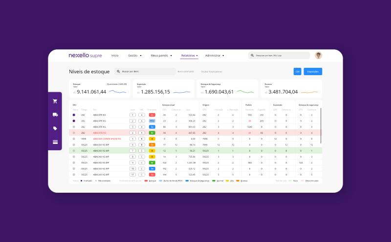
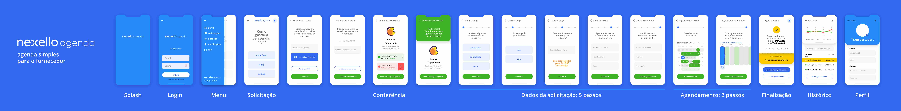
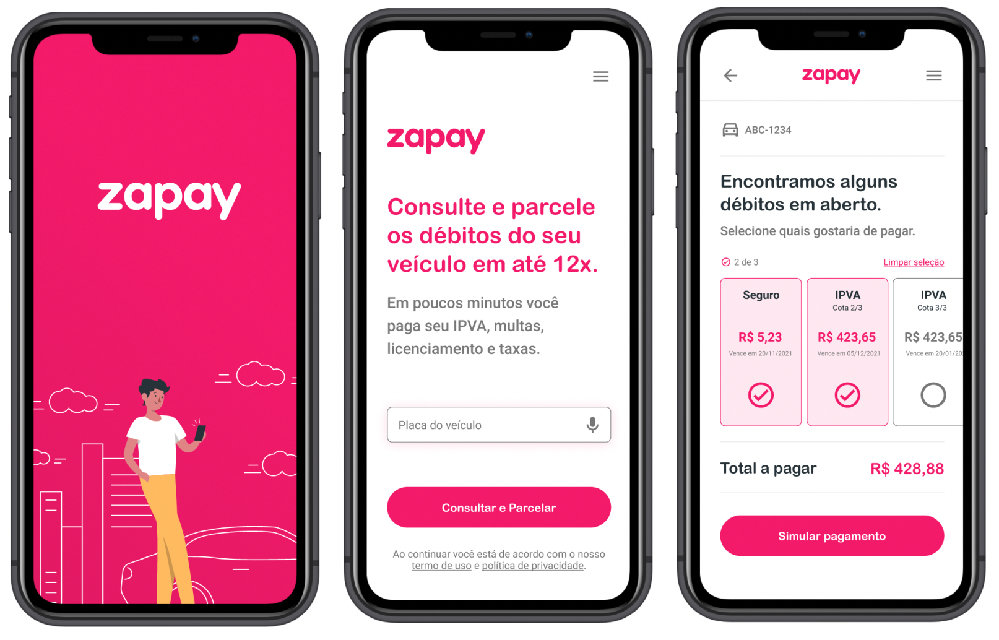
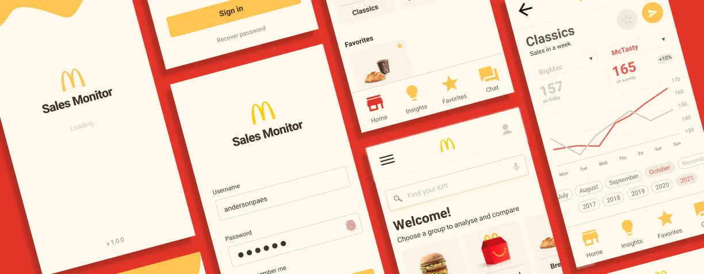
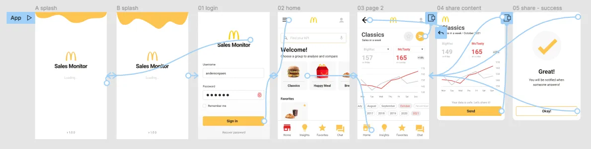

CASES
CASE #1


Supply Chain for Retail
I have worked on UX/UI for Inventory Management, Demand Forecasting, and Logistics Control systems in their SaaS and app versions. I also contributed to adapting the workflow to an agile process with the development team (Dual Track), optimizing performance and collaboration between the Product and Development areas.Discovery Data Visualization Prototyping Metrics
CASE #2


UX/UI for a payment App
Zapay's challenge was to create the initial mobile version of their web payment service for vehicles licenses and taxes. The design was focused on the interaction flow/sales funnel, maintaining consistency with the web version in an accessible way. A highlight of this work is the reachability feature applied to the multiple selection list.Accessbility Prototyping Interaction Flows
CASE #3


Google UX Certificate
My prompt on Google UX Certificate was design a sales monitoring app for a large fast food chain. I thought of design this prompt locally, allowing comparisons between products to help each restaurant to analyse and increase their sales.Discovery Research Prototyping Wireframes